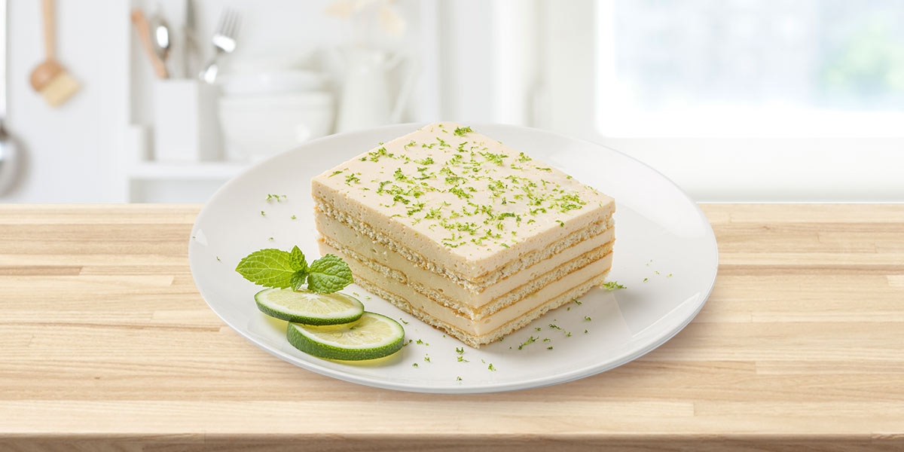

Receta : Postre de limón
Información
- Dificultad: Fácil
- Porciones: 3
- Tiempo total: 47 min
Utensílios
- Batidor
- Plato de hornear
- Licuadora
- Refrigerador
Ingedientes
- 10 GALLETAS SALTINAS DORÉ® (77 g)
- 1/2 taza de LECHE CONDENSADA LA LECHERA® (140 g)
- 1 taza de CREMA DE LECHE NESTLÉ®
- Ralladura y zumo de 3 limones
¡ A cocinar!
- Licúa o mezcla con un batidor de mano la LECHE CONDENSADA LA LECHERA® junto con la CREMA DE LECHE NESTLÉ® y el jugo de limón hasta integrar bien.
- Coloca en el fondo de una refractaria o molde mediano una capa de GALLETAS SALTINAS DORÉ® y encima añade una parte de la mezcla preparada en el paso 1. Repite este procedimiento hasta terminar las galletas y la mezcla. Por último, espolvorea la ralladura de limón encima
- Lleva el molde a la nevera y refrigera por 30 minutos. Luego de finalizado el tiempo de espera, retira de la nevera y sirve.
